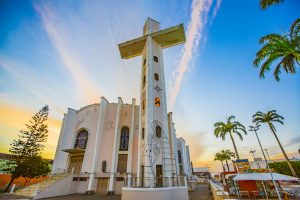
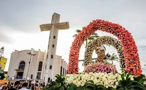
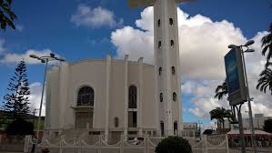

A Paróquia Concatedral de Nossa Senhora do Bom Conselho representa a fé tangível deste povo guerreiro, que é o de Arapiraca. A Igreja do Santíssimo, conhecida como Igreja Matriz, foi construída por Manoel André, fundador da cidade. Ela foi erguida como capela em meados do século XIX, quando o então povoado começava a avançar, rumo a se tornar município. Desta feita, em 1855, Manoel André a levantou sobre o túmulo de sua primeira esposa Maria Isabel Silva Valente, representando este o marco de fundação de Arapiraca. Em 3 de fevereiro de 1865, ocorreu a primeira missa. Em 15 de agosto de 1944, ganhou ampliação e tornou-se paróquia. Hoje, a média é de 90 mil fiéis que frequentam o templo religioso por ano.
  